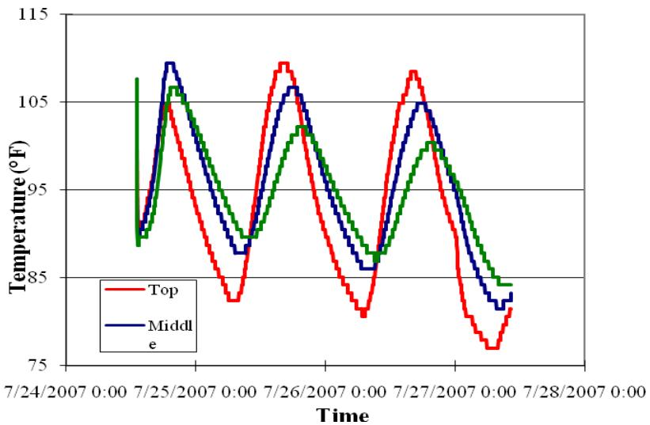
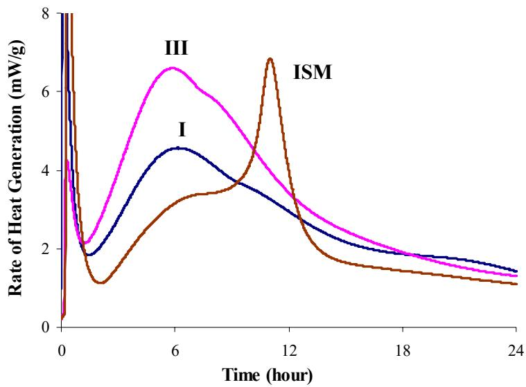
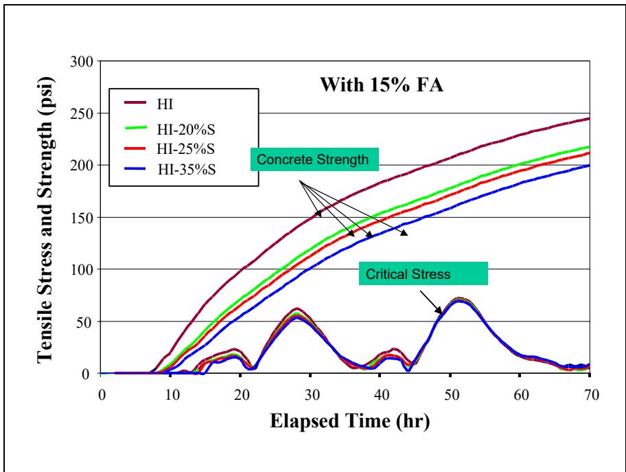
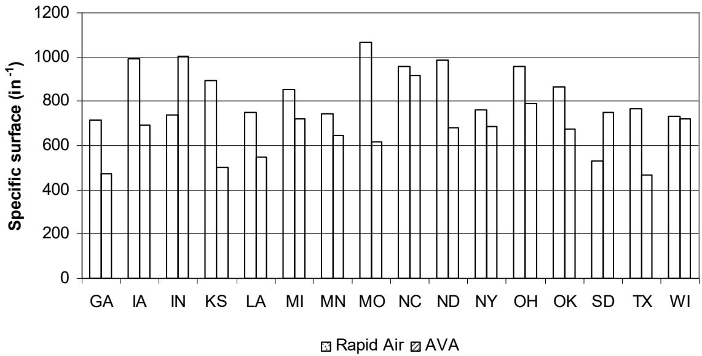
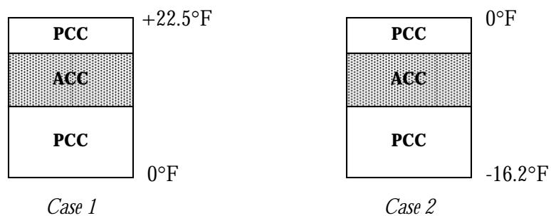

HIPERPAV
HIPERPAV is a computer-based prediction tool developed by the Federal Highway Administration to assess early-age cracking potential and optimize construction practices for concrete pavements. The software models the development of tensile stresses within the pavement slab during curing by integrating heat-of-hydration data, mix design parameters, environmental conditions, and structural inputs such as joint spacing and slab thickness [1] [7] [10] [11]. By simulating temperature evolution, moisture loss, shrinkage, and strength gain over time, the program calculates stress-to-strength ratios to identify risks of thermal cracking and determine optimal windows for saw-cutting and traffic opening [5] [10] [11]. The term also refers to a high-performance concrete pavement approach that utilizes controlled air-void characteristics, low water-cement ratios, and supplementary cementitious materials to enhance durability and freeze-thaw resistance [3] [8] [10].
Sources (11)
Key findings
- HIPERPAV modelling demonstrated that binary and ternary cement concretes develop sufficient early strength to avoid cracking in typical summer temperatures but become more vulnerable to cracking when placed in cooler spring or fall weather [1].
- The study showed that increasing the thickness of a whitetopping overlay markedly reduces both deflection and peak stress under truck loads, while unbonded interfaces cause substantially higher deflections and stresses compared to fully bonded layers [2].
- HIPERPAV was identified as an essential tool for evaluating daily temperature-gradient conditions and selecting paving schedules that minimize early-age curling, warping, and smoothness loss [8].
- The report found that temperature gradients developing between the slab surface and its base during curing can trigger early cracking, whereas sections placed under cooler conditions exhibit little or no early cracking and reduced warping compared with conventional concrete [10].
- Supplying actual calorimetry measurements to HIPERPAV markedly improved its predictive capability for thermal-cracking risk, set times, strength gain, and construction windows [11].
- The analysis confirmed that simulated temperatures using hydration curve parameters from semi-adiabatic tests had higher accuracy than those using isothermal test data, leading to a recommendation for semi-adiabatic-based inputs in HIPERPAV [5].
- Using the HIPERPAV computer program was recommended as a best practice for concrete overlay projects because it can forecast paving or curing issues and enable proactive mitigation during construction [6].
- The guide specification required that any paving mix be screened with HIPERPAV to confirm that early cracking is unlikely under the anticipated construction weather [4].
Early-Age Cracking Mechanisms & Seasonal Risk
Early-age cracking in concrete pavements is primarily driven by the interaction between internal thermal stresses, generated by heat of hydration during cement setting, and external environmental conditions such as ambient temperature and humidity [3] [10]. As the concrete cures, the resulting temperature gradients and volume changes from shrinkage create tensile stresses that can exceed the material’s developing strength, leading to thermal cracking if not properly managed [5] [7]. Seasonal variations significantly influence this risk profile by altering the rate of heat dissipation and moisture loss, thereby affecting the critical window during which the pavement is most vulnerable to early-age distress [1] [10].
The following figure illustrates how temperature varies at different depths within the pavement structure.

Temperature profiles at different depths within a concrete pavement slab over time. [5]The figure displays temperature fluctuations recorded at the top, middle, and bottom layers of a pavement structure over several days. The data illustrates how the middle layer retains higher temperatures due to cement hydration while the top surface fluctuates more with environmental changes.
Research problem — Existing concrete-paving systems lack performance-based specifications and quality-assurance tools, leading to uncontrolled material variability that undermines the durability and safety of high-speed construction projects [3]. The reliance on generic or predicted heat-evolution data rather than material-specific calorimetric measurements introduces significant uncertainty into early-age strength, stress, and thermal-cracking forecasts [5] [7] [10] [11]. Early-age curling and warping caused by temperature gradients and moisture differences create location-dependent variations in ride quality that can shift pavement classifications from bonus to penalty zones [8]. Premature cracking driven by inadequate mix designs, construction variability, and insufficient real-time quality control shortens service life and raises safety concerns, necessitating reliable prediction of when cracks will form [1] [10]. The absence of reliable guidance for using supplementary cementitious materials in ternary blends under cold-weather conditions restricts their adoption and increases the risk of early-age cracking due to slower hydration rates [1] [4].
State of the art — The current state of the art for early-age cracking prediction relies on a hybrid workflow that integrates mechanistic modeling with site-specific calorimetric data, moving beyond empirical cement chemistry assumptions to use measured heat-evolution parameters from semi-adiabatic or isothermal tests [5] [11]. This calibrated approach enables the prediction of critical tensile stresses and thermal-cracking risk by coupling hydration kinetics with real-time environmental inputs such as weather conditions and construction schedules to determine optimal saw-cutting windows [10] [11]. While the methodology is established for conventional mixes, current practice acknowledges limitations in accounting for detailed characteristics of supplementary cementitious materials and lacks standardized field procedures for monitoring heat of hydration due to equipment cost constraints [1] [7].
Findings from the reports
- HIPERPAV effectively evaluates daily temperature-gradient conditions to select paving schedules that minimize early-age curling, warping, and smoothness loss [8].
- Feeding actual calorimetry data into HIPERPAV markedly improves its predictive capability for thermal-cracking risk, set times, strength gain, and construction windows compared to using generic cement values [11].
- Simulated pavement temperatures derived from semi-adiabatic test parameters tracked measured in-situ field temperatures with higher accuracy than those derived from isothermal tests [5].
- HIPERPAV analysis confirmed that binary and ternary blended-cement concretes have a very low likelihood of early-age cracking in typical summer temperatures due to adequate strength gain, though this margin narrows significantly in cooler spring or fall conditions [1].
- The HIPERPAV program serves as a required screening tool in guide specifications to confirm that early cracking is unlikely for paving mixes under anticipated construction weather [4].
Novelty & rigor — The approach is novel because it integrates realistic seasonal environmental curves with detailed blended-cement material data to simultaneously predict thermal-moisture stresses and strength development, enabling the identification of elevated cracking risks during spring or fall that standard practices often overlook [1]. Methodological rigor is established by coupling site-specific heat-evolution measurements from calorimetry directly into the analysis software, replacing generic empirical predictions with actual hydration data to improve the reliability of early-age stress forecasts [7] [11]. Reproducibility is ensured through a comprehensive protocol that mandates precise mix preparation, standardized laboratory testing for thermal and mechanical properties, and the use of mobile weather stations to capture real-time field conditions for input into the predictive model [10].
The following figure illustrates how different cement types influence this critical thermal property.

Effect of cement type on heat of hydration [11]The figure displays the rate of heat generation over time for three different cement types: Type I, Type III, and a blended ISM cement. Type III cement exhibits a significantly higher peak in the rate of heat evolution compared to Type I cement due to its higher fineness. The ISM blended cement, containing slag, shows a delayed and lower initial hydration rate compared to the other types.
Reported values
| Parameter | Value | Context | Source |
|---|---|---|---|
| difference between strength and stress | 6.2 psi | spring weather conditions | [1] |
| minimum difference between concrete strength and stress | 6.2 psi | spring weather conditions | [1] |
| reliability factor | 60% | 24-hour-based run to match seven-day predictions | [11] |
Across the reviewed reports, HIPERPAV modeling establishes that early-age cracking risk is governed by the dynamic balance between thermal-moisture induced stress and rapidly developing concrete strength, with seasonal temperature profiles critically determining whether this safety margin remains sufficient to prevent failure. While summer conditions provide a large protective margin where strength significantly exceeds stress, cooler spring and fall weather narrows this gap substantially, increasing vulnerability even when absolute cracking thresholds are not immediately breached in blended cement systems. [1] [5] [8]
The figure below illustrates this dynamic by comparing concrete strength against critical stress during summer conditions.

Concrete strength vs. critical stress for summer conditions [1]The analysis demonstrates that in summer conditions, the rate of concrete strength development is desirable and stresses are relatively low, ensuring that concrete strength remains higher than the stress within 3 days after paving.
Implications — Designers and contractors should treat early-age cracking risk as elevated during cooler spring or fall periods, adopting additional precautions such as tighter temperature control, modified curing regimes, or mix adjustments to ensure pavement durability [1]. Agencies must integrate predictive analysis into the planning process to proactively adjust designs and sequencing, thereby mitigating operational disruptions and reducing the risk of premature cracking associated with seasonal temperature differentials [6]. Specification requirements should mandate that all ternary pavement mixes undergo performance-based analysis prior to field use, replacing prescriptive limits with validated checks against anticipated construction weather conditions [4].
Limitations — The model’s favorable assessments are restricted to typical summer conditions and do not reliably account for cooler spring or fall weather [1]. Predictions regarding supplementary cementitious materials remain incomplete due to the absence of specific material characteristics in the current program [1]. Validation is hindered by inconclusive analytical strain comparisons and a lack of sufficient field testing to verify phase two results [2] [11].
Evidence: 10 reports (5 primary)
Material Characterization & Overlay Design
Concrete overlay systems are applied either as bonded layers adhering directly to the existing pavement or as unbonded layers separated by an interlayer [6]. The design of these overlays relies on established methodologies that determine critical parameters such as thickness, joint spacing, and material properties [6]. Construction practices often involve surface preparation to enhance bonding, the use of admixtures for early strength development, and the inclusion of separation layers to manage slab movement [6].
Research problem — Concrete highways frequently fail to meet performance targets due to excessive tire-pavement noise and uncontrolled surface texture variations that compromise friction, smoothness, durability, and safety [9]. The absence of a unified design guide integrating predictive modeling with construction sequencing leaves agencies unable to foresee placement issues or reliably select durable overlay solutions [6].
State of the art — The current state of the art centers on concrete overlay preservation, supported by a growing suite of design tools and documented field experience [6]. Several states have already adopted standardized design procedures, such as Illinois’ bonded concrete-on-asphalt protocol, while nationwide field programs have produced findings that define prevailing practices for sustainability and life-cycle cost analysis [6].
Findings from the reports
- The Air-Void Analyzer (AVA) provided real-time data on total air, specific surface, and spacing factor, enabling immediate adjustments to admixture dosages that improved freeze-thaw durability [10].
- Conventional air-content checks frequently failed to detect unacceptable air-void spacing linked to premature joint distress, whereas AVA testing revealed these issues effectively [10].
- Sampling location relative to the paver or vibrators did not significantly affect AVA-derived air content, specific surface, or spacing factor, confirming the robustness of the method [10].
- AVA measurements agreed with laboratory core analyses of hardened concrete within approximately ten percent and delivered comprehensive assessments in roughly thirty minutes [10].
- Temperature gradients between the slab surface and base during curing triggered early cracking, while sections placed under cooler conditions exhibited little or no early cracking and reduced warping [10].
- Uncracked high-performance pavement sections demonstrated slightly lower joint deflections in falling-weight-deflectometer tests compared to cracked sections, indicating better support [10].
- The HIPERPAV computer program forecasted paving or curing issues and enabled proactive mitigation during construction, establishing it as a recommended best practice for concrete overlay projects [6].
Novelty & rigor — The research introduces a state-specific design workflow that integrates detailed field investigations with three-dimensional finite-element modeling to evaluate bonded and unbonded layer interfaces for thin concrete overlays [2]. This approach extends existing procedures by incorporating bond-condition modeling, fiber reinforcement, maturity testing, and construction sequencing into a practical performance-based methodology for rapid overlay placement [2].
Reported values
| Parameter | Value | Context | Source |
|---|---|---|---|
| air content | 4.5% to 7.0% | tested ahead of the paver during the demonstration | [10] |
| air content | 5.7% | average of seven tests conducted ahead of the paver | [10] |
| compressive strength | 2,550 psi | average two-day compressive strength of 4 x 8 inch cylinders | [10] |
| correlation with ASTM C 457 | 10% | AVA test results vs hardened concrete | [10] |
| spacing factor | 0.0087 in. | average for all tests | [10] |
| specific surface | 722 in.-1 | average | [10] |
The following figure illustrates the comparison of AVA and rapid air specific surface measurements across each state.

Comparison of specific surface values measured by AVA and Rapid Air methods across various states. [10]The figure displays a bar chart comparing the average specific surface data obtained from AVA tests against rapid air test results for each state listed on the x-axis. The visual trend indicates that the rapid air test consistently predicts larger specific surface values compared to the AVA method, which aligns with source observations regarding the tendency of these respective tests. This comparison is relevant to HIPERPAV as it evaluates concrete durability parameters, specifically air-void characteristics like spacing factor and specific surface, which are critical for assessing freeze-thaw resistance.
While AVA facilitates immediate material characterization, the HIPERPAV program further integrates this data with thermal modeling to forecast curing issues, enabling proactive mitigation strategies that reduce early-age cracking and improve long-term pavement performance. [6] [10]
Implications — Contractors should utilize on-site air void analysis to enable real-time adjustment of admixture dosages, ensuring the achievement of tightly spaced void systems that enhance freeze-thaw durability [10]. Agencies ought to adopt rapid testing protocols to eliminate traditional curing delays and reduce material-testing expenditures while allowing for pre-paver sampling without compromising accuracy [10]. Practitioners must implement calibration procedures or procedural checks when deploying these systems, as sensitivity to test location or mix variables can affect result consistency across different jurisdictions [10].
Evidence: 4 reports (2 primary)
Overlay Structural Performance & Joint Behavior
Longitudinal joints in asphalt overlays represent critical interfaces where structural continuity is often compromised by construction tolerances and traffic loading. Relative opening at these joints initiates stress concentrations that accelerate fatigue cracking and allow moisture infiltration, thereby degrading the overall performance of the overlay system [8].
Research problem — Accurately predicting early-age behavior, including strength development, stress evolution, and temperature effects, remains challenging for thin whitetopping concrete overlays [2]. Achieving durable overlays is hindered by issues such as reflective cracking, delamination, inadequate bonding, and insufficient load transfer across joints and widening units [2]. Selecting an appropriate overlay thickness that satisfies long-term traffic forecasts while maintaining acceptable fatigue limits for both concrete and asphalt layers presents a significant design problem [2].
The following figure illustrates the temperature differentials applied to the composite pavement.

Temperature differentials applied to the composite pavement [2]The figure displays two schematic cross-sections of a composite pavement structure consisting of an Asphalt Concrete Course (ACC) sandwiched between Portland Cement Concrete (PCC) layers.
Findings from the reports
- Demonstrated that high-performance composite pavements can be reliably analyzed using a three-dimensional finite-element model when layers are fully bonded [2].
- Found that increasing the thickness of a whitetopping overlay markedly reduces both deflection and peak stress under truck loads [2].
- Observed that bonding condition dominates performance, with unbonded interfaces causing substantially higher deflections and stresses compared to bonded conditions [2].
- Identified that the width of widening units, rather than their depth, is the key factor in limiting deflection [2].
- Showed that appropriately spaced tie bars can restore load transfer even without aggregate interlock [2].
Implications — Designers must verify the bond condition of existing layers and incorporate tie bars if full bonding cannot be assured to ensure adequate load transfer [2]. Specifying thicker overlays and optimizing widening unit widths can effectively reduce deflection and peak stresses in the composite structure [2].
Evidence: 2 reports (1 primary)
Related concepts
In this hierarchy
- Parent: Pavement Analysis Software
- Sibling: DIPLOMAT
- Sibling: EverFE
- Sibling: ILLI-PAVE
- Sibling: ISLAB2000
- Sibling: Mechanistic-Empirical Pavement Design Guide
Related by shared evidence
- Maturity Method — shares 11 reports
- Calorimetry — shares 7 reports
- Cement Hydration — shares 7 reports
- Concrete Curing — shares 7 reports
- CP Tech Center Reports — shares 7 reports
- Dowel Bar — shares 7 reports
- Drying Shrinkage — shares 7 reports
- Heat of Hydration — shares 7 reports
Similar topics
- Cement Hydration
- Maturity Method
- Heat Signature
- Heat Index Method
- Calorimetry
- Hydration, Heat & Maturity
- Heat of Hydration
- Concrete Curing
References
- K. Wang and Z. Ge, "Evaluating Properties of Blended Cements for Concrete Pavements," Department of Civil, Construction and Environmental Engineering, Iowa State University, Ames, IA, 2003. [Online]. Available: https://www.intrans.iastate.edu/wp-content/uploads/2018/03/blended_cements-1.pdf
- J. K. Cable, F. S. Fanous, H. Ceylan, D. Wood, D. Frentress, T. Tabbert, S. Y. Oh, and K. Gopalakrishnan, "Design and Construction Procedures for Concrete Overlay and Widening of Existing Pavements," Center for Portland Cement Concrete Pavement Technology, Iowa State University, Ames, IA, Rep. TR-511, 2005. [Online]. Available: https://www.intrans.iastate.edu/wp-content/uploads/2018/03/oreo_design.pdf
- D. Harrington, R. Rasmussen, D. Merritt, T. Cackler, and P. Taylor, "Long-Term Plan for Concrete Pavement Research and Technology—The Concrete Pavement Road Map (Second Generation): Volume II, Tracks (FHWA-HRT-11-070)," National Center for Concrete Pavement Technology, Iowa State University, Ames, IA, 2012. [Online]. Available: https://www.fhwa.dot.gov/publications/research/infrastructure/pavements/pccp/11070/11070.pdf
- P. Taylor, P. Tikalsky, K. Wang, G. Fick, and X. Wang, "Development of Performance Properties of Ternary Mixtures: Field Demonstrations and Project Summary," National Concrete Pavement Technology Center, Ames, IA, Rep. TPF-5(117), 2012. [Online]. Available: https://www.intrans.iastate.edu/wp-content/uploads/2018/03/ternary_final_w_cvr.pdf
- K. Wang, J. M. Ruiz, J. Hu, Z. Ge, Q. Xu, J. Grove, and R. Rasmussen, "Simple and Rapid Test for Monitoring the Heat Evolution ..., Phase III," National Concrete Pavement Technology Center, Ames, IA, 2008. [Online]. Available: https://www.intrans.iastate.edu/wp-content/uploads/2018/03/CalorimeterReportPhaseIII.pdf
- G. Fick and D. Harrington, "Concrete Overlay Field Application Program, Final Report: Volume I," National Concrete Pavement Technology Center, Ames, IA, 2012. [Online]. Available: https://apps.itd.idaho.gov/apps/manuals/Materials/Materials%20References/OverlayFieldAppFinalReport.pdf
- K. Wang, Z. Ge, J. Grove, J. M. Ruiz, and R. Rasmussen, "Developing a Simple and Rapid Test for Monitoring the Heat Evolution of Concrete Mixtures (Phase 3)," CTRE, Iowa State University, Ames, IA, Rep. FHWA Project 17 (Phase I), 2006. [Online]. Available: https://www.intrans.iastate.edu/wp-content/uploads/2018/03/CalorimeterReportPhaseIII.pdf
- H. Ceylan, S. Kim, D. J. Turner, R. O. Rasmussen, G. K. Chang, J. Grove, and K. Gopalakrishnan, "Impact of Curling, Warping, and Other Early-Age Behavior on Concrete Pavement Smoothness: EFD Study (Phase II)," Center for Transportation Research and Education, Ames, IA, 2007. [Online]. Available: https://www.intrans.iastate.edu/wp-content/uploads/2018/03/curling_warping-2.pdf
- T. Ferragut, R. O. Rasmussen, P. Wiegand, E. Mun, and E. T. Cackler, "ISU-FHWA-ACPA Concrete Pavement Surface Characteristics Program Part 2: Preliminary Field Data Collection," National Concrete Pavement Technology Center, Ames, IA, 2007. [Online]. Available: https://www.intrans.iastate.edu/research/completed/concrete-pavement-surface-characteristics-proj-15-part-2/
- J. Grove, G. Fick, T. Rupnow, and F. Bektas, "Material and Construction Optimization for Prevention of Premature Pavement Distress in PCC Pavements," National Concrete Pavement Technology Center, Ames, IA, Rep. TPF-5(066), 2008. [Online]. Available: https://www.intrans.iastate.edu/wp-content/uploads/2018/03/mco-final.pdf
- K. Wang, Z. Ge, J. Grove, J. M. Ruiz, R. Rasmussen, and T. Ferragut, "Simple and Rapid Test for Monitoring the Heat Evolution of Concrete Mixtures, Phase 2," Center for Transportation Research and Education, Ames, IA, 2007. [Online]. Available: https://www.intrans.iastate.edu/wp-content/uploads/2018/03/calorimeter.pdf
Feedback on this page